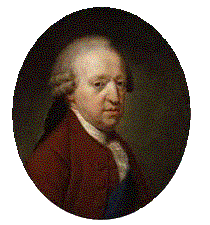

Birthday Ode For 31st December, 1787
Text by Robert Burns
Written 31 days before the Prince's death(No tune known)


|
1. Afar the illustrious Exile roams,
Whom kingdoms on this day should hail; An inmate in the casual shed, On transient pity's bounty fed, Haunted by busy memory's bitter tale! Beasts of the forest have their savage homes, But He, who should imperial purple wear, Owns not the lap of earth where rests his royal head! His wretched refuge, dark despair, While ravening wrongs and woes pursue, And distant far the faithful few Who would his sorrows share. 2. False flatterer, Hope, away! Nor think to lure us as in days of yore: We solemnize this sorrowing natal day, To prove our loyal truth-we can no more, And owning Heaven's mysterious sway, Submissive, low adore. 3. Ye honoured, mighty Dead, Who nobly perished in the glorious cause, Your King, your Country, and her laws. Prince Charles Edward Stuart was born on 31st December 172O; He died on 31st January 1788. |
1. Là-bas, l'Exilé vagabonde,
Qu'en ce jour on devrait fêter; Occupant des abris immondes, Mangeant le pain de la pitié, Assailli de souvenirs tristes! Enviant le sort des animaux Qui dans les forêts ont leur gîte. Privé des fastes impériaux, On te prêta la pierre où repose ta tête! Pauvre refuge, désarroi Qu'un acharné malheur entraîne, Ceux-là sont hélas loin de toi Qui voudraient partager ta peine. 2. Fuyons l'Espoir et ses écueils! Il prétend nous leurrer comme il le fit naguère: Nous célébrons ce jour de naissance et de deuil, Nous proclamant loyaux: plus, nous ne pouvons faire, Nous acceptons enfin l'obscur arrêt du Ciel, Que, docile, chacun révère. 3. Sublimes Morts, vous honorâtes, En tombant noblement pour la Cause, à la fois, Le légitime Roi, la Patrie et ses lois. Trad: Christian Souchon (c) 2005 Le Prince Charles Edouard Stuart naquit le 31 décembre 172O; Il mourut le 31 janvier 1788. |